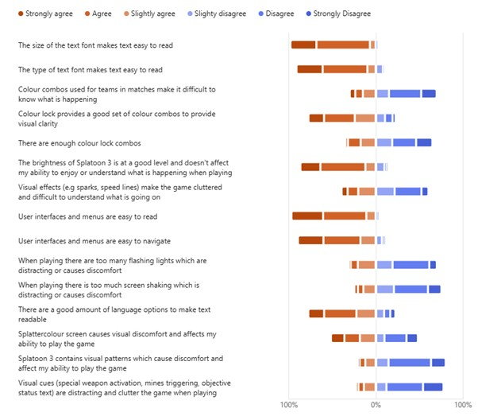
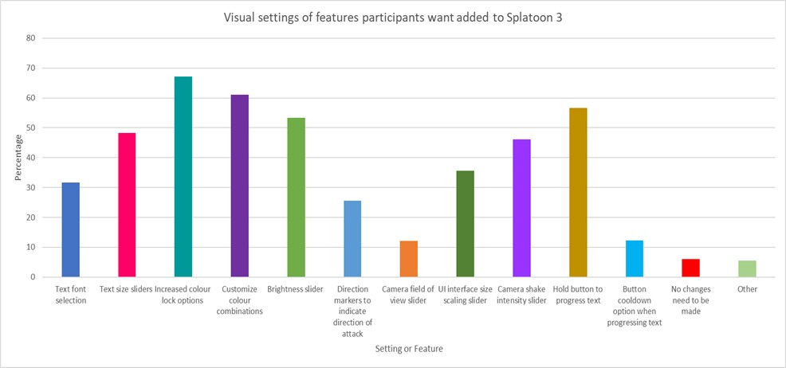

This website shows the results of a survey into how splatoon 3 players viewed how accessible the games visals were
Visuals likert
How much did participants agree with the statements provided?
Visuals Improvements
How did players want the visual design to be improved?
